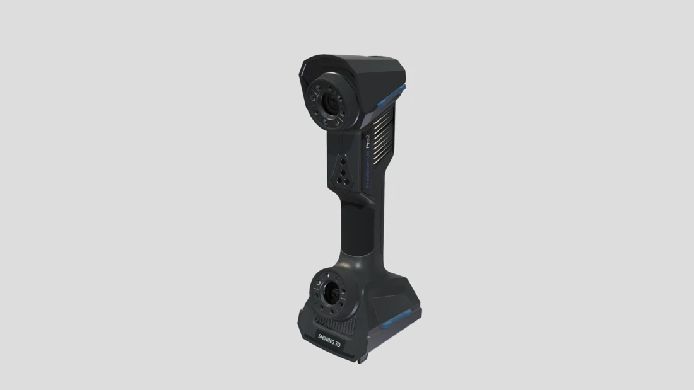

SHINING 3D
SHINING 3DSeguimiento dinámico
FreeScan Trak Nova
Sistema dinámico de escaneo y seguimiento 3D.
Libertad para grandes componentes
 SHINING 3D
SHINING 3DMás libertad. Más eficiencia.
La precisión que tu industria necesita.
Escáner 3D portátil híbrido que combina láser azul e infrarrojo. Con Wi-Fi 7, 93 líneas láser y fotogrametría de video integrada, lleva la inspección dimensional a donde está tu pieza.
Desde componentes pequeños hasta estructuras de gran tamaño: un flujo flexible para inspección, control de calidad e ingeniería inversa.
Wi-Fi 7 para transferir datos sin cables y moverte alrededor de piezas o acceder a espacios reducidos.
La fotogrametría VPG optimiza los marcadores para reducir errores acumulados en componentes grandes.
93 líneas láser y hasta 9.1 millones de puntos por segundo para acelerar la digitalización.
550 g y modos de detalle, cavidades e infrarrojo para adaptar la captura a cada geometría.

Captura superficies complejas, documenta geometrías y genera datos que puedes comparar con un modelo CAD o usar como punto de partida para reconstruir una pieza.
La preparación de superficies, el uso de marcadores y los resultados dependen del modo de captura, la pieza y las condiciones de trabajo.
Capacidades del FreeScan Combo+ Wireless, de acuerdo con la información del fabricante.
Valores máximos bajo las condiciones de ensayo del fabricante. La precisión de escaneo no equivale a la precisión volumétrica. Consultar fuente oficial
Software de escaneo para captura, alineación y generación de malla, con herramientas de visualización de calidad de datos.
Evaluación dimensional y comparación de datos con CAD. Consulta la licencia y configuración necesarias para tu aplicación.
Integra los datos en un flujo de inspección o ingeniería inversa. Verifica formatos de exportación y compatibilidad con tu software antes de adquirirlo.
El punto de partida es tu aplicación. Evalúa el escáner y define una configuración que responda a tus piezas y objetivos.
Solicita el desglose del escáner, baterías, estación de carga, accesorios, marcadores, software y licencias en tu cotización. La configuración, capacitación, garantía y entrega deben confirmarse con Model Pro; no se asumen como incluidos.
Revisa tamaño, material, tolerancias y entorno de trabajo para definir equipo, software y accesorios adecuados.
Solicita una evaluación de captura y procesamiento con objetivos concretos. Disponibilidad, modalidad y condiciones por confirmar.
Consulta las opciones de capacitación, soporte y mantenimiento, así como su alcance y condiciones antes de la compra.
Cuéntanos qué necesitas. Cada pieza, cada proceso y cada objetivo merecen una solución a su medida.
Esta es una maqueta. No se ha enviado ni guardado ningún dato.
SHINING 3DSistema dinámico de escaneo y seguimiento 3D.
 SHINING 3D
SHINING 3DEscáner 3D de metrología autónomo y listo para inspección.

SHINING 3DEscáner 3D portátil láser para aplicaciones metrológicas.